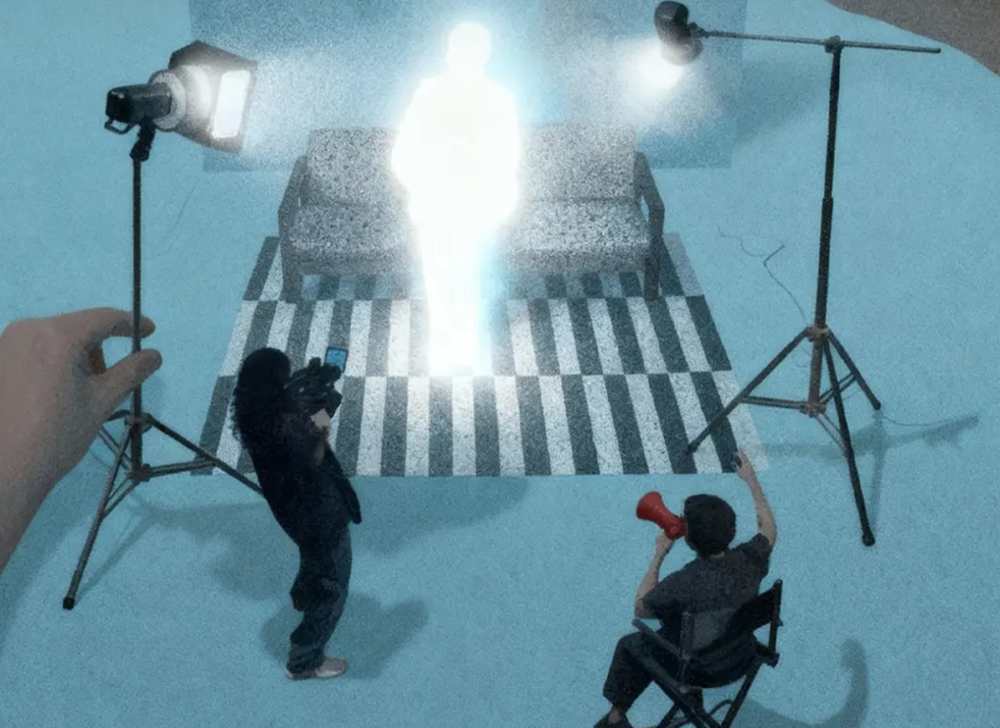
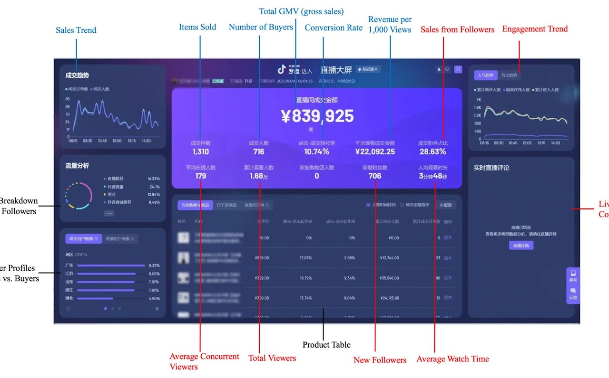

Live-commerce merges livestreaming with e-commerce. Hosts sell on camera while monitoring real-time dashboards that track every viewer click, comment, and purchase. To work on the digital floor is to "dance with these metrics": to shape every performance, every smile, every word to satisfy an infrastructure you did not design.
Dancing with Metrics: Digitalization of Women's Labor in China
PhD Dissertation, University of Michigan (expected Spring 2027)
Committee: Greta Krippner (Chair), Paige Sweet, Roi Livne, Lisa Nakamura (Digital Studies)
Across the world, stable industrial employment has stagnated, and growing numbers of women have been drawn into flexible, platform-mediated work. Nowhere has this shift been faster or more complete than in China. My dissertation studies the transformation of work, and through it the decisions that make a life.
I study this through China's trillion-dollar live-commerce industry, real-time video selling in which hosts perform before a dashboard that counts every viewer click, comment, and purchase as it happens. In a single decade, it has grown into a trillion-dollar industry employing 38 million workers, most of them young women from China’s small towns and countryside. The project draws on fifteen months of ethnographic fieldwork in Hangzhou between 2019 and 2024, including participant observation as a livestreaming assistant embedded in studio workplaces; 141 interviews spanning the industry; and internal industry documents. Read alongside archives of women’s factory and service work, these materials allow me to distinguish what persists and what changes when gendered labor moves onto digital platforms.
I show that platform labor is neither wholly new nor merely more of the same: it renews an enduring reliance on work cast as feminine while transforming how that work is measured, directed, and valued. I call the central mechanism of this transformation the “metricization of work”: the organization of labor around continuous scoring, in which the measure of one act shapes the conditions of the next. Work has long been measured, but platform scores do more than price completed output; they are embedded in infrastructures that allocate future opportunities and direct subsequent labor. Across four linked chapters, I trace this logic through market design, the labor process, automation, and social reproduction.
My dissertation receives support from:
— Mellon/ACLS Dissertation Innovation Fellowship (recognizes pathbreaking dissertation research pursuing
bold and innovative approaches)
— Chiang Ching-kuo Foundation Doctoral Fellowship
— AAS-Henry Luce Foundation Fellowship
— Douglas W. Roblin Predoctoral Fellowship
— Boyd/Williams Dissertation Fellowship for Research on Women and Work
— International Institute Research Grant
— Lieberthal-Rogel Center for Chinese Studies Grant
— Rackham Graduate School Fellowship
Peer-Reviewed Articles & Manuscripts
Gender, Labor, and Technology
Jun Zhou "Engineering Relations: How Metrics Architecture Stratifies Digital Labor." R&R at American Journal of Sociology.
— Early Career Workshop Award, Society for the Advancement of Socio-Economics Annual Meeting
2026 Jun Zhou "Constructing Replaceability: Authenticity Regimes and the Automation of Emotional Labor" Work & Occupations 53(3), 745-775.
— 2026 Katherine Luke Best Paper Award, Sociology Department, University of Michigan
— 2025 Best Student Paper Award, ASA CITAMS Section
— 2025 Best Student Paper Award, LaborTech Network (Honorable Mention)
— Related public-facing essay: “Undervalued Work, Replaceable Worker: What AI Reveals About Emotional Labor,” Work in Progress, August 12, 2026.
2026 Jun Zhou "Doing Data, Doing Gender: How Gendered AI is Produced through Optimization Loop" Big Data & Society 13(2).
— 2026 Hacker-Mullins Student Paper Award, ASA Science, Knowledge, and Technology Section (Honorable Mention)
Jun Zhou and Zoe Zhao. “Verify You Are Human: The Automation Proof Paradox Under the Specter of AI” First author. Invited and Under Review at Poetics
— Special issue on ”Technology and Inequality in Culture, Media, and the Arts,” edited by Julia Ticona, Alondra Nelson, and Angèle Christin.
Jun Zhou. "Metric-Mediated Labor and the Gender Organization of Platform Capitalism in China" Under Review
Jun Zhou and Tiantian Liu. “Mushrooms at the End of Algorithms: How Livestreaming E-commerce Bypasses Rural Farmers in China's Poverty Alleviation” Equal author. Manuscript Available
The Political Economy of Work-Family Separation
Jun Zhou. "Boundary Labor: The Regulatory Demand of Performing Work-Family Separation" R&R at Socio-Economic Review
— 2025 Sally Hacker Graduate Student Paper Award, ASA Sex & Gender Section
— 2022 Best Student Paper in Economic Sociology & Entrepreneurship, ASA Economic Sociology Section
— 2022 Cheryl Allyn Miller Award for Research on Women and Work, Sociologists for Women in Society
— 2022 McGuigan Prize for Best Graduate Essay in Women’s & Gender Studies, University of Michigan
— 2020 Raymond Fogelson Award for Best Master’s Thesis, Ethnological & Historical Sciences, University of Chicago